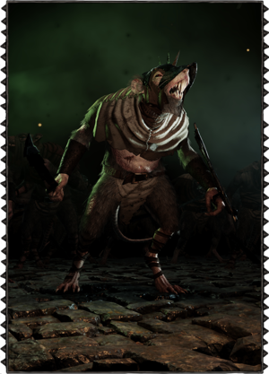
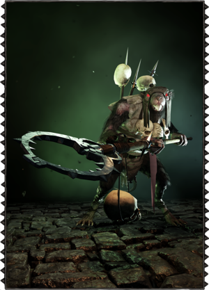
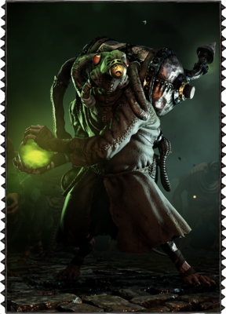
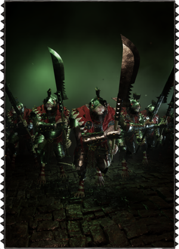
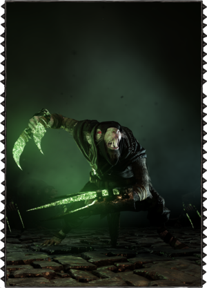
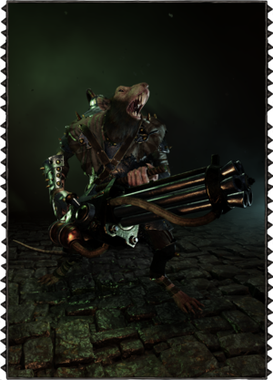
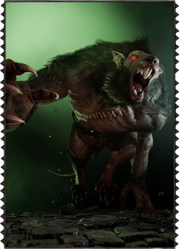

There are a large vareity of Skaven in Vermintide, from the lowly Clanrat, to the massive Rat Ogre.
There are a large vareity of Skaven in Vermintide, from the lowly Clanrat, to the massive Rat Ogre.
The Clanrats make up the bulk of the Skaven army and are among the lowest ranking in the vile clan hierarchy. Slightly shorter than your average man, the Clanrats matted fur is filthy and patched, with wounds and boils covering parts of their body. They are clothed in rags and scrap armour, carrying worn down swords, knives, maces, flails, spears, and torches. The Clanrats' strength comes from their great numbers, surrounding and overwhelming their enemy by attacking from all directions. While banded together, the Clanrats bolster each other's confidence and aggressiveness, encouraged by the screaming of orders like "kill the man-things, quick-quick". Yet these warriors are cowardly at heart and lack basic discipline and determination. If the odds turn against them, the remaining Clanrats will start to cower away or even flee the battle.
Packmasters are Clan Moulder Troops tasked with driving packs of ravening beasts into battle using whips and intimidation to spur their charges into a frenzy of teeth and claws. However, the Packmasters hired by Clan Fester in their assault on Ubersreik are predominantly equipped with things-catchers, a pole arm designed to incapacitate opponents by strangulation. It is still unknown why Clan Fester has paid the extra Warpstone tokens for this somewhat unusual specialization.Without support from the rest of the group, the heroes will face inevitable death when caught by a Packmaster. After catching his prey, the Moulder-kin will first try to put as much distance as possible between the captured hero and the rest of the team. When ready, the Packmaster will hoist the helpless victim into the air, and end the hero's life through a gruesome hanging.
These Skaven wear their signature robes and gas masks while carrying a heavy re-breathing apparatus. The Poison Wind Globadiers have actually strapped a ticking time bomb on their backs, since the container is filled with highly combustible warp-gas. These hired elite soldiers can be heard from quite a distance, clanking and wheezing their way into battle, whilst preparing their globes with deadly green gas to be flung at their enemy. Upon impact, the globe shatters and spreads the toxic fumes, dazing and damaging any who might be caught in the resulting cloud. Life is cheap in the eyes of the Skaven, and the Globadier does not care if Clanrats are caught within the cloud along with the targeted enemy.If the heroes manage to cause heavy damage to the Globadier, it will go into a frenzy as its apparatus has been breached and becomes unstable. The Globadier will then charge the players in a suicidal attempt to take them out. If they don't manage to kill it in time, the Globadier and its equipment will explode in their midst.
Wearing heavy armour, red cloth and a crest adorned helmet, the Stormvermin are among the fighting elite of the Skaven clans. Well trained in the use of halberds, they are a tough challenge in one on one combat. Stormvermin will mix up stabs, swings, blocks and parries to always keep players on their toes. The Stormvermin are often seen ordering the Clanrats around, shouting instructions and egging the rest of the army on, thereby bolstering their aggression. They are leaders in battle, and will not break and run as easily as the rest of their kind. Facing a lone Stormvermin can be quite a challenge, but taking on a whole Patrol is borderline suicidal. Using their tactical training the Stormvermin Patrol will quickly surround individual heroes, and with just a few well placed blows, bring the player to his knees.
For a Gutter Runner, stealth is everything. Always moving in the shadows, the Gutter Runner wears a black cloak to blend in with the surroundings and makes as little noise as possible. Equipped with Warpstone Rat Claws that glow a sickening shade of green, the Gutter Runner will expertly leap at its enemy, using its weight and momentum to knock the player onto his or her back. Left prone and vulnerable, the Gutter Runner will then proceed to hack into the hero's torso, forcing the rest of the players to rush to the aid of their comrade. Having undergone gruelling training in their mysterious fighting styles, the Gutter Runner is able to bend and contort its body, making it incredibly nimble and able to move at speeds unachievable by man. While attacking a hero, it will focus all of its attention in killing him or her, but once the other players start attacking it, the Gutter Runner will roll backwards and disappear into a cloud of smoke.
The Ratling Gun is a six-barreled monstrosity of a gun, powered by warp steam and operated with a hand crank. This fearsome weapon of unparalleled rate of fire is normally operated by a Clan Skryre weapons team, but the version deployed in Ubersreik seems to be of a lighter, experimental type, capable of being moved and fired by a single Skaven. Encumbered by the weight and unwieldiness of the weapon, the Ratling Gunner is far from quick on his feet, but once he cranks up his weapon and opens fire, Warpstone laced hell is unleashed. Single minded and persistent, the Ratling Gunner will pick a target, and then continually track it, firing relentlessly until either the weapon jams, needs to reload or the Hero lays dead and shredded beyond recognition. Much like his colleague the Poison Wind Globadier, the Ratling Gunner won't let a small fact like Clanrats or Skavenslaves blocking his line of fire stop him. If a Hero can keep her wits about them, they can make the Ratling Gunner mow down his kin, whilst dodging from cover to cover. However, be sure to not get caught in the open, or face a rapid fire death in a hail of Warpstone gunfire.
Few enemies are as terrifying or as dangerous as the primary export of clan Moulder; the Rat Ogre. As their name would suggest, these hulking monstrosities tower well above the head of any man, elf or certainly dwarf that would stand before them. Their tremendous strength and surprising agility has meant the end of many a would be hero. Considering their voracious appetite to boot, it was not likely their end was graceful. Upon hearing the terrifying roar of the beast, one would do best to seek allies. Further; for all its strength, agility and considerable odor, the beast is lacking in intelligence. Capable of focusing on only a single foe at once, it is best to note whom the beast has settled upon as its next meal and prevent the creature from tasting anything more than steel and flames. For those unfortunate enough to be locked within its maddened gaze, escape is unlikely. Though defense is not impossible, expect to be winded and flying backward even from a successful attempt, unless one has the skill to parry his blows immediately as they arrive. For those with explosives and tinctures of strength or speed, the Rat Ogre provides an excellent excuse to use them immediately.
